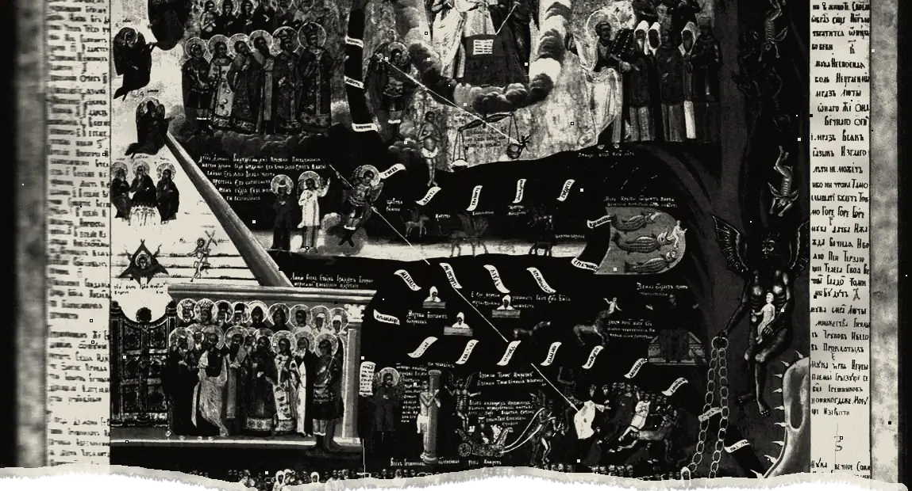
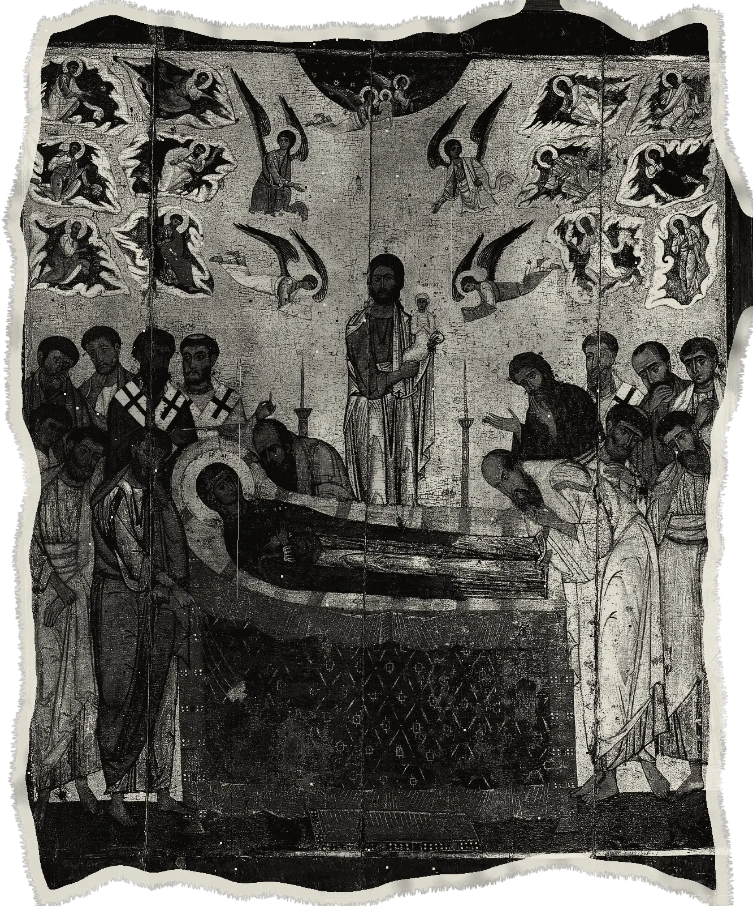
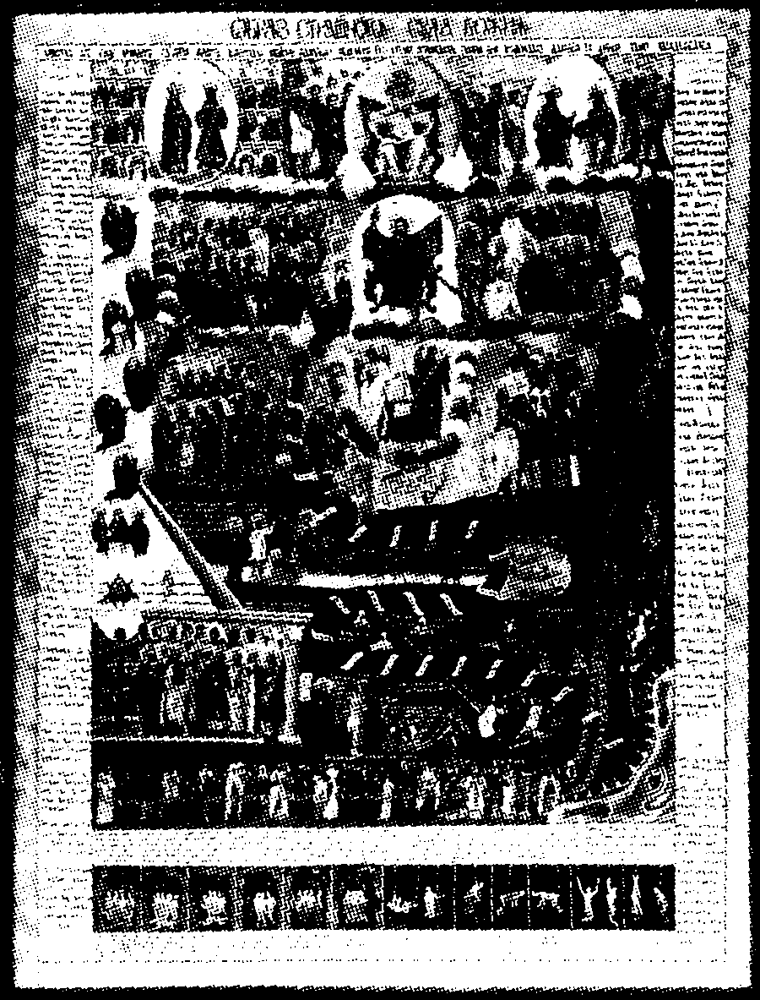

PLATE H · 08 / 12
THE AFTERLIFE
Doctrine, image, and the soul’s itinerary
Orthodox teaching about the dead is precise, and it is not the same thing as the crowded cosmology of the icon. The atlas keeps the two apart, then puts them on the same page.
Iconography 15th–18th c.; doctrine and practice to the present · Novgorod; the Volga region; Russia · Orthodox Christianity; folk elaboration


H / 01
What the Church says
Orthodox teaching holds that the dead are judged and that the living may pray for them. The funeral rites ask for the forgiveness of sins and for a place ‘with the saints’; memorial services repeat the request at intervals. The fortieth day is the last of the appointed commemorations; the annual commemoration continues after it.
The Church’s language is deliberately restrained about the intermediate state. Where popular literature supplies a detailed itinerary — where the soul goes on which day, what it sees — the atlas marks that as devotional or folk elaboration, not as doctrine.

H / 02
Reading the icon
The Last Judgment icon is a diagram as much as a painting. Christ appears in glory; the scales weigh souls; the righteous move toward the heavenly city; the damned descend into a river of fire; the punishments are arranged in small compartments, each with its own inscription and its own social type — the miser, the adulterer, the usurer, the drunkard.
The Volga icon used here belongs to the eighteenth century and to the urban artisan milieu: it borrows heavily from printed engravings, including their page-like blocks of text. This is no remote medieval image but a picture grown out of print, made for people used to reading with their eyes.

| Question | Doctrine (documented) | Folk elaboration (interpretation) |
|---|---|---|
| What happens at death? | The soul is separated from the body and judged; the resurrection is awaited | The soul lingers, wanders, visits the house, needs to be fed |
| Why commemorate on the fortieth day? | Following the Ascension on the fortieth day | The soul departs on the fortieth day after a journey |
| Can the living help the dead? | Yes: prayer and almsgiving | Yes: food, gifts, a place at table |
| What is the afterlife like? | Communion with God; the vision of the divine light | A landscape with places, roads, boundaries and officials |


Apparatus sources · related plates · terms
Sources for this plate
- skrizhal Veniamin (Krasnopevkov-Rumovskii), Archbishop — Novaia Skrizhal’ (1803 (text consulted in a modern online edition))
- tolstoy1995 Tolstoy, Nikita I. (ed.); Tolstaia, Svetlana M. (ed., vol. 5) — Slavianskie drevnosti: Etnolingvisticheskii slovar’ (1995–2012)
- ivanits1989 Ivanits, Linda J. — Russian Folk Belief (1989)
- merridale2000 Merridale, Catherine — Night of Stone: Death and Memory in Russia (2000)
URLs, access dates and limitations are in the bibliography.